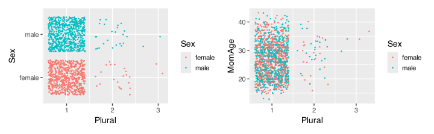
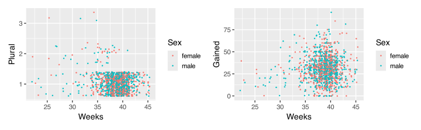

# A tibble: 1,450 × 15
ID Plural Sex MomAge Weeks Marital RaceMom HispMom Gained Smoke BirthWeightOz BirthWeightGm Low
<dbl> <dbl> <dbl> <dbl> <dbl> <dbl> <dbl> <chr> <chr> <dbl> <dbl> <dbl> <dbl>
1 1 1 1 32 40 1 1 N 38 0 111 3147. 0
2 2 1 2 32 37 1 1 N 34 0 116 3289. 0
3 3 1 1 27 39 1 1 N 12 0 138 3912. 0
4 4 1 1 27 39 1 1 N 15 0 136 3856. 0
5 5 1 1 25 39 1 1 N 32 0 121 3430. 0
6 6 1 1 28 43 1 1 N 32 0 117 3317. 0
7 7 1 2 25 39 1 1 N 75 0 143 4054. 0
8 8 1 2 15 42 2 1 N 25 0 113 3204. 0
9 9 1 2 21 39 1 1 N 28 0 120 3402 0
10 10 1 2 27 40 2 1 N 37 0 124 3515. 0
# ℹ 1,440 more rows
# ℹ 2 more variables: Premie <dbl>, MomRace <chr>Getting to know your data
Claus O. Wilke
2025-05-31
Any data analysis should start with basic quality control
- Assess data relevance
(Can the data answer your question in principle?)
- Assess data provenance
(Where does the data come from? Is it reliable?)
- Clean data if required
(In practice, this is 70-80% of data analysis work)
- Perform descriptive analysis and sanity checks
(Inspect summary statistics, distributions, scatter plots, etc.)
Components of data quality
• Accuracy
• Precision
• Usability
• Completeness
• Consistency
• Accessibility
• Relevance
Components of data quality
• Accuracy
• Precision
• Usability
• Completeness
• Consistency
• Accessibility
• Relevance
Does the data contain any systematic errors or biases?
Components of data quality
• Accuracy
• Precision
• Usability
• Completeness
• Consistency
• Accessibility
• Relevance
Does the data contain any systematic errors or biases?
How affected are observations by random errors/noise?
Accuracy means low bias, precision means low noise

Components of data quality
• Accuracy
• Precision
• Usability
• Completeness
• Consistency
• Accessibility
• Relevance
Does the data contain any systematic errors or biases?
How affected are observations by random errors/noise?
Is the data documented? Is it machine-readable?
Usability requires a data dictionary
Data Dictionary
A “centralized repository of information about data such as meaning, relationships to other data, origin, usage, and format” (Wikipedia)
Example: Palmer penguins reference page
Components of data quality
• Accuracy
• Precision
• Usability
• Completeness
• Consistency
• Accessibility
• Relevance
Does the data contain any systematic errors or biases?
How affected are observations by random errors/noise?
Is the data documented? Is it machine-readable?
Are entire records missing? Are observations missing?
Components of data quality
• Accuracy
• Precision
• Usability
• Completeness
• Consistency
• Accessibility
• Relevance
Does the data contain any systematic errors or biases?
How affected are observations by random errors/noise?
Is the data documented? Is it machine-readable?
Are entire records missing? Are observations missing?
Does data vary among sources or over time?
Components of data quality
• Accuracy
• Precision
• Usability
• Completeness
• Consistency
• Accessibility
• Relevance
Does the data contain any systematic errors or biases?
How affected are observations by random errors/noise?
Is the data documented? Is it machine-readable?
Are entire records missing? Are observations missing?
Does data vary among sources or over time?
Do you have access to the data? Can you obtain it?
Components of data quality
• Accuracy
• Precision
• Usability
• Completeness
• Consistency
• Accessibility
• Relevance
Does the data contain any systematic errors or biases?
How affected are observations by random errors/noise?
Is the data documented? Is it machine-readable?
Are entire records missing? Are observations missing?
Does data vary among sources or over time?
Do you have access to the data? Can you obtain it?
Can you use the data to address your question?
Inspecting and cleaning a dataset in R
The dataset: Births in NC
Details and Source
This dataset contains data on a sample of 1450 birth records from 2001 that statistician John Holcomb at Cleveland State University selected from the North Carolina State Center for Health and Environmental Statistics.
The dataset has 1450 observations on 15 variables.
| Variable | Description |
|---|---|
ID |
Patient ID code |
Plural |
1=single birth, 2=twins, 3=triplets |
Sex |
Sex of the baby: 1=male 2=female |
MomAge |
Mother’s age (in years) |
Weeks |
Completed weeks of gestation |
Marital |
Marital status: 1=married or 2=not married |
RaceMom |
Mother’s race: 1=white, 2=black, 3=American Indian, 4=Chinese, 5=Japanese, 6=Hawaiian, 7=Filipino, or 8=Other Asian or Pacific Islander |
HispMom |
Hispanic origin of mother: C=Cuban, M=Mexican, N=not Hispanic, O=Other Hispanic, P=Puerto Rico, S=Central/South America |
Gained |
Weight gained during pregnancy (in pounds) |
Smoke |
Smoker mom? 1=yes or 0=no |
BirthWeightOz |
Birth weight in ounces |
BirthWeightGm |
Birth weight in grams |
Low |
Indicator for low birth weight: 1=2500 grams or less |
Premie |
Indicator for premature birth: 1=36 weeks or sooner |
MomRace |
Mother’s race: black, hispanic, other, or white |
Start with a cursory inspection
Pay attention to the data types of each column
What’s going on with the Gained column?
Missing values were not read correctly
[1] "38" "34" "12" "15" "32" "32" "75" "25" "28" "37" "45" "52" "26" "31"
[15] "40" "51" "45" "25" "0" "20" "20" "38" "15" "3" "9" "37" "30" "40"
[29] "37" "56" "48" "4" "43" "40" "25" "53" "15" "19" "26" "32" "25" "50"
[43] "34" "2" "23" "16" "48" "80" "19" "16" "50" "55" "25" "33" "10" "30"
[57] "30" "#N/A" "55" "38" "33" "49" "14" "18" "40" "30" "17" "45" "15" "31"
[71] "50" "25" "12" "38" "47" "20" "40" "34" "5" "25" "18" "27" "46" "31"
[85] "48" "15" "51" "12" "33" "17" "25" "31" "24" "16" "18" "40" "16" "57"
[99] "18" "29" "45" "18" "11" "20" "50" "26" "20" "35" "12" "38" "50" "28"
[113] "34" "41" "20" "5" "30" "35" "16" "32" "40" "30" "28" "25" "50" "25"
[127] "0" "7" "24" "34" "40" "32" "25" "25" "25" "0" "47" "45" "34" "46"
[141] "40" "38" "0" "35" "10" "23" "27" "10" "10" "32" "58" "27" "51" "20"
[155] "20" "55" "19" "30" "0" "43" "46" "25" "25" "50" "40" "17" "35" "45"
[169] "#N/A" "32" "33" "30" "50" "35" "29" "30" "15" "26" "#N/A" "19" "26" "16"
[183] "21" "33" "30" "33" "61" "11" "22" "29" "21" "0" "34" "12" "34" "31"
[197] "39" "42" "9" "20" "#N/A" "24" "28" "21" "26" "30" "30" "35" "43" "28"
[211] "35" "41" "40" "20" "25" "50" "30" "20" "20" "23" "40" "35" "22" "60"
[225] "33" "30" "20" "28" "30" "58" "30" "50" "45" "40" "10" "25" "40" "33"
[239] "20" "26" "25" "26" "43" "#N/A" "#N/A" "56" "21" "#N/A" "40" "45" "50" "46"
[253] "20" "40" "#N/A" "40" "33" "40" "51" "25" "30" "40" "20" "35" "35" "34"
[267] "38" "28" "20" "70" "20" "24" "43" "50" "12" "22" "18" "51" "50" "25"
[281] "1" "35" "20" "33" "20" "35" "34" "33" "15" "31" "36" "38" "30" "33"
[295] "12" "45" "34" "40" "35" "55" "19" "39" "19" "#N/A" "27" "20" "35" "40"
[309] "35" "30" "43" "36" "40" "45" "26" "34" "30" "20" "14" "20" "29" "35"
[323] "42" "37" "9" "20" "32" "0" "30" "35" "45" "50" "50" "25" "#N/A" "34"
[337] "56" "15" "40" "28" "20" "25" "40" "28" "40" "43" "22" "34" "33" "38"
[351] "53" "29" "16" "45" "33" "31" "18" "39" "20" "9" "25" "15" "25" "40"
[365] "11" "22" "#N/A" "43" "30" "37" "46" "16" "40" "21" "24" "38" "46" "21"
[379] "23" "35" "45" "55" "30" "34" "30" "11" "55" "11" "29" "23" "26" "8"
[393] "27" "20" "34" "26" "40" "0" "32" "33" "47" "41" "30" "25" "22" "35"
[407] "5" "25" "30" "18" "18" "36" "29" "34" "30" "30" "21" "26" "45" "15"
[421] "12" "37" "20" "31" "23" "39" "33" "10" "33" "45" "46" "21" "45" "38"
[435] "24" "30" "20" "11" "16" "30" "10" "33" "40" "24" "32" "55" "30" "20"
[449] "20" "40" "34" "27" "24" "30" "20" "29" "51" "23" "7" "25" "#N/A" "8"
[463] "50" "40" "35" "38" "34" "38" "26" "69" "10" "35" "19" "31" "20" "32"
[477] "18" "60" "40" "#N/A" "#N/A" "16" "24" "20" "38" "33" "30" "22" "20" "28"
[491] "45" "#N/A" "53" "11" "35" "22" "44" "22" "27" "40" "36" "31" "47" "68"
[505] "26" "32" "28" "43" "29" "53" "25" "49" "55" "30" "44" "22" "18" "50"
[519] "49" "18" "40" "25" "44" "30" "18" "0" "25" "26" "50" "#N/A" "31" "30"
[533] "24" "20" "35" "35" "42" "25" "35" "47" "17" "22" "25" "24" "40" "15"
[547] "39" "20" "14" "52" "23" "25" "31" "12" "25" "30" "45" "41" "21" "44"
[561] "95" "25" "27" "27" "69" "43" "20" "50" "29" "10" "35" "33" "6" "#N/A"
[575] "42" "35" "60" "45" "28" "20" "#N/A" "20" "14" "27" "29" "30" "31" "40"
[589] "31" "75" "27" "25" "34" "11" "20" "40" "30" "30" "20" "23" "20" "15"
[603] "10" "37" "35" "28" "45" "17" "30" "36" "42" "10" "21" "0" "33" "38"
[617] "56" "22" "40" "24" "52" "30" "36" "24" "0" "9" "32" "14" "23" "50"
[631] "29" "25" "40" "20" "55" "25" "35" "38" "25" "15" "33" "4" "29" "24"
[645] "31" "41" "40" "36" "17" "40" "35" "14" "26" "35" "44" "32" "28" "27"
[659] "30" "32" "25" "20" "40" "34" "60" "20" "50" "27" "8" "55" "28" "18"
[673] "8" "50" "30" "25" "28" "20" "0" "31" "25" "#N/A" "24" "30" "18" "16"
[687] "#N/A" "30" "1" "38" "5" "17" "7" "32" "50" "10" "35" "10" "55" "20"
[701] "34" "25" "21" "20" "21" "45" "26" "34" "27" "30" "65" "30" "40" "25"
[715] "50" "3" "20" "30" "45" "10" "31" "#N/A" "48" "30" "46" "30" "40" "40"
[729] "46" "30" "20" "68" "18" "8" "25" "38" "60" "8" "50" "28" "40" "20"
[743] "33" "50" "50" "30" "15" "33" "81" "15" "28" "32" "#N/A" "27" "32" "36"
[757] "20" "31" "36" "#N/A" "28" "39" "14" "38" "25" "20" "18" "32" "52" "32"
[771] "10" "45" "69" "21" "50" "29" "40" "21" "47" "30" "20" "42" "39" "38"
[785] "15" "11" "36" "43" "25" "25" "20" "62" "69" "20" "38" "30" "30" "#N/A"
[799] "52" "50" "40" "45" "50" "40" "28" "30" "30" "#N/A" "30" "25" "20" "13"
[813] "32" "15" "32" "10" "45" "6" "24" "40" "26" "18" "35" "60" "44" "37"
[827] "27" "26" "18" "40" "22" "40" "40" "30" "21" "36" "27" "55" "20" "30"
[841] "38" "33" "24" "35" "30" "35" "21" "31" "20" "40" "25" "32" "39" "35"
[855] "43" "28" "37" "24" "12" "36" "40" "71" "50" "34" "45" "0" "10" "55"
[869] "56" "30" "40" "13" "22" "23" "32" "30" "30" "33" "20" "40" "44" "32"
[883] "15" "39" "#N/A" "45" "32" "20" "32" "31" "25" "30" "#N/A" "40" "30" "30"
[897] "29" "37" "31" "28" "34" "32" "40" "28" "50" "31" "23" "25" "32" "45"
[911] "22" "33" "30" "18" "38" "17" "30" "35" "30" "25" "37" "51" "38" "10"
[925] "55" "27" "21" "40" "47" "56" "23" "40" "37" "45" "23" "26" "38" "45"
[939] "7" "45" "35" "40" "20" "23" "20" "23" "6" "33" "40" "30" "38" "57"
[953] "30" "10" "28" "33" "4" "20" "25" "27" "15" "60" "65" "64" "65" "50"
[967] "33" "20" "30" "38" "15" "60" "60" "38" "40" "20" "27" "45" "6" "14"
[981] "33" "37" "35" "12" "25" "35" "27" "30" "#N/A" "45" "20" "38" "43" "20"
[995] "#N/A" "28" "9" "27" "19" "23" "26" "#N/A" "50" "23" "50" "30" "8" "23"
[1009] "20" "19" "30" "40" "35" "29" "55" "33" "6" "35" "0" "40" "30" "#N/A"
[1023] "20" "40" "46" "27" "43" "40" "33" "40" "42" "45" "40" "35" "30" "36"
[1037] "19" "30" "43" "8" "40" "32" "65" "30" "44" "26" "73" "24" "30" "39"
[1051] "16" "37" "30" "#N/A" "20" "27" "27" "36" "20" "35" "38" "26" "36" "17"
[1065] "21" "55" "22" "45" "39" "22" "18" "15" "#N/A" "20" "27" "0" "28" "25"
[1079] "64" "40" "11" "25" "11" "37" "10" "43" "20" "38" "17" "50" "44" "35"
[1093] "23" "35" "22" "20" "15" "35" "30" "50" "0" "71" "48" "25" "33" "30"
[1107] "60" "40" "28" "23" "10" "60" "42" "40" "8" "40" "40" "#N/A" "18" "17"
[1121] "25" "18" "32" "27" "30" "48" "20" "0" "25" "41" "12" "25" "40" "37"
[1135] "45" "43" "50" "#N/A" "10" "19" "41" "45" "0" "25" "30" "70" "30" "40"
[1149] "30" "34" "24" "40" "40" "30" "12" "23" "52" "33" "29" "32" "35" "20"
[1163] "15" "51" "22" "25" "46" "28" "37" "28" "25" "42" "15" "50" "25" "14"
[1177] "15" "14" "27" "40" "36" "20" "32" "33" "40" "33" "19" "31" "21" "25"
[1191] "28" "33" "20" "0" "12" "20" "30" "23" "30" "10" "40" "35" "30" "43"
[1205] "48" "38" "#N/A" "11" "58" "20" "15" "61" "20" "67" "25" "40" "37" "30"
[1219] "23" "25" "23" "30" "0" "30" "20" "41" "33" "15" "17" "22" "32" "20"
[1233] "27" "71" "25" "32" "15" "30" "36" "8" "16" "20" "25" "26" "0" "60"
[1247] "5" "19" "19" "30" "14" "20" "6" "10" "22" "34" "11" "12" "27" "10"
[1261] "55" "14" "8" "65" "28" "25" "49" "35" "40" "20" "10" "60" "10" "20"
[1275] "30" "35" "30" "25" "20" "15" "72" "35" "27" "7" "26" "17" "45" "13"
[1289] "29" "28" "15" "20" "41" "30" "65" "50" "35" "36" "28" "45" "50" "30"
[1303] "45" "30" "30" "35" "30" "15" "16" "55" "29" "30" "34" "15" "61" "27"
[1317] "16" "14" "25" "25" "33" "30" "42" "30" "32" "40" "30" "25" "9" "40"
[1331] "28" "13" "41" "35" "42" "10" "85" "70" "26" "27" "35" "20" "22" "20"
[1345] "1" "28" "6" "5" "42" "20" "20" "24" "25" "35" "20" "15" "20" "37"
[1359] "30" "30" "30" "10" "#N/A" "51" "25" "22" "22" "0" "20" "60" "23" "26"
[1373] "15" "35" "15" "19" "28" "20" "15" "10" "18" "25" "30" "20" "5" "#N/A"
[1387] "21" "45" "29" "48" "10" "27" "#N/A" "32" "25" "21" "30" "60" "60" "19"
[1401] "20" "29" "5" "47" "14" "46" "46" "48" "22" "42" "19" "48" "27" "32"
[1415] "31" "42" "64" "22" "25" "24" "30" "60" "56" "20" "45" "45" "33" "31"
[1429] "#N/A" "50" "29" "41" "22" "35" "25" "27" "26" "40" "38" "42" "40" "20"
[1443] "23" "15" "30" "55" "35" "29" "30" "32" Use the na argument to specify allowed NA values
NCbirths <- read_csv(
"https://wilkelab.org/DSC385/datasets/NCbirths.csv",
na = c("", "NA", "#N/A")
)
NCbirths# A tibble: 1,450 × 15
ID Plural Sex MomAge Weeks Marital RaceMom HispMom Gained Smoke BirthWeightOz BirthWeightGm Low
<dbl> <dbl> <dbl> <dbl> <dbl> <dbl> <dbl> <chr> <dbl> <dbl> <dbl> <dbl> <dbl>
1 1 1 1 32 40 1 1 N 38 0 111 3147. 0
2 2 1 2 32 37 1 1 N 34 0 116 3289. 0
3 3 1 1 27 39 1 1 N 12 0 138 3912. 0
4 4 1 1 27 39 1 1 N 15 0 136 3856. 0
5 5 1 1 25 39 1 1 N 32 0 121 3430. 0
6 6 1 1 28 43 1 1 N 32 0 117 3317. 0
7 7 1 2 25 39 1 1 N 75 0 143 4054. 0
8 8 1 2 15 42 2 1 N 25 0 113 3204. 0
9 9 1 2 21 39 1 1 N 28 0 120 3402 0
10 10 1 2 27 40 2 1 N 37 0 124 3515. 0
# ℹ 1,440 more rows
# ℹ 2 more variables: Premie <dbl>, MomRace <chr>Use the na argument to specify allowed NA values
NCbirths <- read_csv(
"https://wilkelab.org/DSC385/datasets/NCbirths.csv",
na = c("", "NA", "#N/A")
)
NCbirths |>
pull(Gained) [1] 38 34 12 15 32 32 75 25 28 37 45 52 26 31 40 51 45 25 0 20 20 38 15 3 9 37 30 40 37 56 48 4 43 40
[35] 25 53 15 19 26 32 25 50 34 2 23 16 48 80 19 16 50 55 25 33 10 30 30 NA 55 38 33 49 14 18 40 30 17 45
[69] 15 31 50 25 12 38 47 20 40 34 5 25 18 27 46 31 48 15 51 12 33 17 25 31 24 16 18 40 16 57 18 29 45 18
[103] 11 20 50 26 20 35 12 38 50 28 34 41 20 5 30 35 16 32 40 30 28 25 50 25 0 7 24 34 40 32 25 25 25 0
[137] 47 45 34 46 40 38 0 35 10 23 27 10 10 32 58 27 51 20 20 55 19 30 0 43 46 25 25 50 40 17 35 45 NA 32
[171] 33 30 50 35 29 30 15 26 NA 19 26 16 21 33 30 33 61 11 22 29 21 0 34 12 34 31 39 42 9 20 NA 24 28 21
[205] 26 30 30 35 43 28 35 41 40 20 25 50 30 20 20 23 40 35 22 60 33 30 20 28 30 58 30 50 45 40 10 25 40 33
[239] 20 26 25 26 43 NA NA 56 21 NA 40 45 50 46 20 40 NA 40 33 40 51 25 30 40 20 35 35 34 38 28 20 70 20 24
[273] 43 50 12 22 18 51 50 25 1 35 20 33 20 35 34 33 15 31 36 38 30 33 12 45 34 40 35 55 19 39 19 NA 27 20
[307] 35 40 35 30 43 36 40 45 26 34 30 20 14 20 29 35 42 37 9 20 32 0 30 35 45 50 50 25 NA 34 56 15 40 28
[341] 20 25 40 28 40 43 22 34 33 38 53 29 16 45 33 31 18 39 20 9 25 15 25 40 11 22 NA 43 30 37 46 16 40 21
[375] 24 38 46 21 23 35 45 55 30 34 30 11 55 11 29 23 26 8 27 20 34 26 40 0 32 33 47 41 30 25 22 35 5 25
[409] 30 18 18 36 29 34 30 30 21 26 45 15 12 37 20 31 23 39 33 10 33 45 46 21 45 38 24 30 20 11 16 30 10 33
[443] 40 24 32 55 30 20 20 40 34 27 24 30 20 29 51 23 7 25 NA 8 50 40 35 38 34 38 26 69 10 35 19 31 20 32
[477] 18 60 40 NA NA 16 24 20 38 33 30 22 20 28 45 NA 53 11 35 22 44 22 27 40 36 31 47 68 26 32 28 43 29 53
[511] 25 49 55 30 44 22 18 50 49 18 40 25 44 30 18 0 25 26 50 NA 31 30 24 20 35 35 42 25 35 47 17 22 25 24
[545] 40 15 39 20 14 52 23 25 31 12 25 30 45 41 21 44 95 25 27 27 69 43 20 50 29 10 35 33 6 NA 42 35 60 45
[579] 28 20 NA 20 14 27 29 30 31 40 31 75 27 25 34 11 20 40 30 30 20 23 20 15 10 37 35 28 45 17 30 36 42 10
[613] 21 0 33 38 56 22 40 24 52 30 36 24 0 9 32 14 23 50 29 25 40 20 55 25 35 38 25 15 33 4 29 24 31 41
[647] 40 36 17 40 35 14 26 35 44 32 28 27 30 32 25 20 40 34 60 20 50 27 8 55 28 18 8 50 30 25 28 20 0 31
[681] 25 NA 24 30 18 16 NA 30 1 38 5 17 7 32 50 10 35 10 55 20 34 25 21 20 21 45 26 34 27 30 65 30 40 25
[715] 50 3 20 30 45 10 31 NA 48 30 46 30 40 40 46 30 20 68 18 8 25 38 60 8 50 28 40 20 33 50 50 30 15 33
[749] 81 15 28 32 NA 27 32 36 20 31 36 NA 28 39 14 38 25 20 18 32 52 32 10 45 69 21 50 29 40 21 47 30 20 42
[783] 39 38 15 11 36 43 25 25 20 62 69 20 38 30 30 NA 52 50 40 45 50 40 28 30 30 NA 30 25 20 13 32 15 32 10
[817] 45 6 24 40 26 18 35 60 44 37 27 26 18 40 22 40 40 30 21 36 27 55 20 30 38 33 24 35 30 35 21 31 20 40
[851] 25 32 39 35 43 28 37 24 12 36 40 71 50 34 45 0 10 55 56 30 40 13 22 23 32 30 30 33 20 40 44 32 15 39
[885] NA 45 32 20 32 31 25 30 NA 40 30 30 29 37 31 28 34 32 40 28 50 31 23 25 32 45 22 33 30 18 38 17 30 35
[919] 30 25 37 51 38 10 55 27 21 40 47 56 23 40 37 45 23 26 38 45 7 45 35 40 20 23 20 23 6 33 40 30 38 57
[953] 30 10 28 33 4 20 25 27 15 60 65 64 65 50 33 20 30 38 15 60 60 38 40 20 27 45 6 14 33 37 35 12 25 35
[987] 27 30 NA 45 20 38 43 20 NA 28 9 27 19 23 26 NA 50 23 50 30 8 23 20 19 30 40 35 29 55 33 6 35 0 40
[1021] 30 NA 20 40 46 27 43 40 33 40 42 45 40 35 30 36 19 30 43 8 40 32 65 30 44 26 73 24 30 39 16 37 30 NA
[1055] 20 27 27 36 20 35 38 26 36 17 21 55 22 45 39 22 18 15 NA 20 27 0 28 25 64 40 11 25 11 37 10 43 20 38
[1089] 17 50 44 35 23 35 22 20 15 35 30 50 0 71 48 25 33 30 60 40 28 23 10 60 42 40 8 40 40 NA 18 17 25 18
[1123] 32 27 30 48 20 0 25 41 12 25 40 37 45 43 50 NA 10 19 41 45 0 25 30 70 30 40 30 34 24 40 40 30 12 23
[1157] 52 33 29 32 35 20 15 51 22 25 46 28 37 28 25 42 15 50 25 14 15 14 27 40 36 20 32 33 40 33 19 31 21 25
[1191] 28 33 20 0 12 20 30 23 30 10 40 35 30 43 48 38 NA 11 58 20 15 61 20 67 25 40 37 30 23 25 23 30 0 30
[1225] 20 41 33 15 17 22 32 20 27 71 25 32 15 30 36 8 16 20 25 26 0 60 5 19 19 30 14 20 6 10 22 34 11 12
[1259] 27 10 55 14 8 65 28 25 49 35 40 20 10 60 10 20 30 35 30 25 20 15 72 35 27 7 26 17 45 13 29 28 15 20
[1293] 41 30 65 50 35 36 28 45 50 30 45 30 30 35 30 15 16 55 29 30 34 15 61 27 16 14 25 25 33 30 42 30 32 40
[1327] 30 25 9 40 28 13 41 35 42 10 85 70 26 27 35 20 22 20 1 28 6 5 42 20 20 24 25 35 20 15 20 37 30 30
[1361] 30 10 NA 51 25 22 22 0 20 60 23 26 15 35 15 19 28 20 15 10 18 25 30 20 5 NA 21 45 29 48 10 27 NA 32
[1395] 25 21 30 60 60 19 20 29 5 47 14 46 46 48 22 42 19 48 27 32 31 42 64 22 25 24 30 60 56 20 45 45 33 31
[1429] NA 50 29 41 22 35 25 27 26 40 38 42 40 20 23 15 30 55 35 29 30 32Detailed quality checks: Look at all column names
[1] "ID" "Plural" "Sex" "MomAge"
[5] "Weeks" "Marital" "RaceMom" "HispMom"
[9] "Gained" "Smoke" "BirthWeightOz" "BirthWeightGm"
[13] "Low" "Premie" "MomRace" What’s the difference between RaceMom and MomRace?
Detailed quality checks: Look at all column names
From the data dictionary:
RaceMom
Mother’s race:1=white,2=black,3=American Indian,4=Chinese,5=Japanese,6=Hawaiian,7=Filipino, or8=Other Asian or Pacific IslanderMomRace
Mother’s race:black,hispanic,other, orwhite
These are similar but not the same. Important not to confuse them!
Detailed quality checks: Look at every data column
[1] 1 2 3 4 5 6 7 8
[9] 9 10 11 12 13 14 15 16
[17] 17 18 19 20 21 22 23 24
[25] 25 26 27 28 29 30 31 32
[33] 33 34 35 36 37 38 39 40
[41] 41 42 43 44 45 46 47 48
[49] 49 50 51 52 53 54 55 56
[57] 57 58 59 60 61 62 63 64
[65] 65 66 67 68 69 70 71 72
[73] 73 74 75 76 77 78 79 80
[81] 81 82 83 84 85 86 87 88
[89] 89 90 91 92 93 94 95 96
[97] 97 98 99 100 101 102 103 104
[105] 105 106 107 108 109 110 111 112
[113] 113 114 115 116 117 118 119 120
[121] 121 122 123 124 125 126 127 128
[129] 129 130 131 132 133 134 135 136
[137] 137 138 139 140 141 142 143 144
[145] 145 146 147 148 149 150 151 152
[153] 153 154 155 156 157 158 159 160
[161] 161 162 163 164 165 166 167 168
[169] 169 170 171 172 173 174 175 176
[177] 177 178 179 180 181 182 183 184
[185] 185 186 187 188 189 190 191 192
[193] 193 194 195 196 197 198 199 200
[201] 201 202 203 204 205 206 207 208
[209] 209 210 211 212 213 214 215 216
[217] 217 218 219 220 221 222 223 224
[225] 225 226 227 228 229 230 231 232
[233] 233 234 235 236 237 238 239 240
[241] 241 242 243 244 245 246 247 248
[249] 249 250 251 252 253 254 255 256
[257] 257 258 259 260 261 262 263 264
[265] 265 266 267 268 269 270 271 272
[273] 273 274 275 276 277 278 279 280
[281] 281 282 283 284 285 286 287 288
[289] 289 290 291 292 293 294 295 296
[297] 297 298 299 300 301 302 303 304
[305] 305 306 307 308 309 310 311 312
[313] 313 314 315 316 317 318 319 320
[321] 321 322 323 324 325 326 327 328
[329] 329 330 331 332 333 334 335 336
[337] 337 338 339 340 341 342 343 344
[345] 345 346 347 348 349 350 351 352
[353] 353 354 355 356 357 358 359 360
[361] 361 362 363 364 365 366 367 368
[369] 369 370 371 372 373 374 375 376
[377] 377 378 379 380 381 382 383 384
[385] 385 386 387 388 389 390 391 392
[393] 393 394 395 396 397 398 399 400
[401] 401 402 403 404 405 406 407 408
[409] 409 410 411 412 413 414 415 416
[417] 417 418 419 420 421 422 423 424
[425] 425 426 427 428 429 430 431 432
[433] 433 434 435 436 437 438 439 440
[441] 441 442 443 444 445 446 447 448
[449] 449 450 451 452 453 454 455 456
[457] 457 458 459 460 461 462 463 464
[465] 465 466 467 468 469 470 471 472
[473] 473 474 475 476 477 478 479 480
[481] 481 482 483 484 485 486 487 488
[489] 489 490 491 492 493 494 495 496
[497] 497 498 499 500 501 502 503 504
[505] 505 506 507 508 509 510 511 512
[513] 513 514 515 516 517 518 519 520
[521] 521 522 523 524 525 526 527 528
[529] 529 530 531 532 533 534 535 536
[537] 537 538 539 540 541 542 543 544
[545] 545 546 547 548 549 550 551 552
[553] 553 554 555 556 557 558 559 560
[561] 561 562 563 564 565 566 567 568
[569] 569 570 571 572 573 574 575 576
[577] 577 578 579 580 581 582 583 584
[585] 585 586 587 588 589 590 591 592
[593] 593 594 595 596 597 598 599 600
[601] 601 602 603 604 605 606 607 608
[609] 609 610 611 612 613 614 615 616
[617] 617 618 619 620 621 622 623 624
[625] 625 626 627 628 629 630 631 632
[633] 633 634 635 636 637 638 639 640
[641] 641 642 643 644 645 646 647 648
[649] 649 650 651 652 653 654 655 656
[657] 657 658 659 660 661 662 663 664
[665] 665 666 667 668 669 670 671 672
[673] 673 674 675 676 677 678 679 680
[681] 681 682 683 684 685 686 687 688
[689] 689 690 691 692 693 694 695 696
[697] 697 698 699 700 701 702 703 704
[705] 705 706 707 708 709 710 711 712
[713] 713 714 715 716 717 718 719 720
[721] 721 722 723 724 725 726 727 728
[729] 729 730 731 732 733 734 735 736
[737] 737 738 739 740 741 742 743 744
[745] 745 746 747 748 749 750 751 752
[753] 753 754 755 756 757 758 759 760
[761] 761 762 763 764 765 766 767 768
[769] 769 770 771 772 773 774 775 776
[777] 777 778 779 780 781 782 783 784
[785] 785 786 787 788 789 790 791 792
[793] 793 794 795 796 797 798 799 800
[801] 801 802 803 804 805 806 807 808
[809] 809 810 811 812 813 814 815 816
[817] 817 818 819 820 821 822 823 824
[825] 825 826 827 828 829 830 831 832
[833] 833 834 835 836 837 838 839 840
[841] 841 842 843 844 845 846 847 848
[849] 849 850 851 852 853 854 855 856
[857] 857 858 859 860 861 862 863 864
[865] 865 866 867 868 869 870 871 872
[873] 873 874 875 876 877 878 879 880
[881] 881 882 883 884 885 886 887 888
[889] 889 890 891 892 893 894 895 896
[897] 897 898 899 900 901 902 903 904
[905] 905 906 907 908 909 910 911 912
[913] 913 914 915 916 917 918 919 920
[921] 921 922 923 924 925 926 927 928
[929] 929 930 931 932 933 934 935 936
[937] 937 938 939 940 941 942 943 944
[945] 945 946 947 948 949 950 951 952
[953] 953 954 955 956 957 958 959 960
[961] 961 962 963 964 965 966 967 968
[969] 969 970 971 972 973 974 975 976
[977] 977 978 979 980 981 982 983 984
[985] 985 986 987 988 989 990 991 992
[993] 993 994 995 996 997 998 999 1000
[1001] 1001 1002 1003 1004 1005 1006 1007 1008
[1009] 1009 1010 1011 1012 1013 1014 1015 1016
[1017] 1017 1018 1019 1020 1021 1022 1023 1024
[1025] 1025 1026 1027 1028 1029 1030 1031 1032
[1033] 1033 1034 1035 1036 1037 1038 1039 1040
[1041] 1041 1042 1043 1044 1045 1046 1047 1048
[1049] 1049 1050 1051 1052 1053 1054 1055 1056
[1057] 1057 1058 1059 1060 1061 1062 1063 1064
[1065] 1065 1066 1067 1068 1069 1070 1071 1072
[1073] 1073 1074 1075 1076 1077 1078 1079 1080
[1081] 1081 1082 1083 1084 1085 1086 1087 1088
[1089] 1089 1090 1091 1092 1093 1094 1095 1096
[1097] 1097 1098 1099 1100 1101 1102 1103 1104
[1105] 1105 1106 1107 1108 1109 1110 1111 1112
[1113] 1113 1114 1115 1116 1117 1118 1119 1120
[1121] 1121 1122 1123 1124 1125 1126 1127 1128
[1129] 1129 1130 1131 1132 1133 1134 1135 1136
[1137] 1137 1138 1139 1140 1141 1142 1143 1144
[1145] 1145 1146 1147 1148 1149 1150 1151 1152
[1153] 1153 1154 1155 1156 1157 1158 1159 1160
[1161] 1161 1162 1163 1164 1165 1166 1167 1168
[1169] 1169 1170 1171 1172 1173 1174 1175 1176
[1177] 1177 1178 1179 1180 1181 1182 1183 1184
[1185] 1185 1186 1187 1188 1189 1190 1191 1192
[1193] 1193 1194 1195 1196 1197 1198 1199 1200
[1201] 1201 1202 1203 1204 1205 1206 1207 1208
[1209] 1209 1210 1211 1212 1213 1214 1215 1216
[1217] 1217 1218 1219 1220 1221 1222 1223 1224
[1225] 1225 1226 1227 1228 1229 1230 1231 1232
[1233] 1233 1234 1235 1236 1237 1238 1239 1240
[1241] 1241 1242 1243 1244 1245 1246 1247 1248
[1249] 1249 1250 1251 1252 1253 1254 1255 1256
[1257] 1257 1258 1259 1260 1261 1262 1263 1264
[1265] 1265 1266 1267 1268 1269 1270 1271 1272
[1273] 1273 1274 1275 1276 1277 1278 1279 1280
[1281] 1281 1282 1283 1284 1285 1286 1287 1288
[1289] 1289 1290 1291 1292 1293 1294 1295 1296
[1297] 1297 1298 1299 1300 1301 1302 1303 1304
[1305] 1305 1306 1307 1308 1309 1310 1311 1312
[1313] 1313 1314 1315 1316 1317 1318 1319 1320
[1321] 1321 1322 1323 1324 1325 1326 1327 1328
[1329] 1329 1330 1331 1332 1333 1334 1335 1336
[1337] 1337 1338 1339 1340 1341 1342 1343 1344
[1345] 1345 1346 1347 1348 1349 1350 1351 1352
[1353] 1353 1354 1355 1356 1357 1358 1359 1360
[1361] 1361 1362 1363 1364 1365 1366 1367 1368
[1369] 1369 1370 1371 1372 1373 1374 1375 1376
[1377] 1377 1378 1379 1380 1381 1382 1383 1384
[1385] 1385 1386 1387 1388 1389 1390 1391 1392
[1393] 1393 1394 1395 1396 1397 1398 1399 1400
[1401] 1401 1402 1403 1404 1405 1406 1407 1408
[1409] 1409 1410 1411 1412 1413 1414 1415 1416
[1417] 1417 1418 1419 1420 1421 1422 1423 1424
[1425] 1425 1426 1427 1428 1429 1430 1431 1432
[1433] 1433 1434 1435 1436 1437 1438 1439 1440
[1441] 1441 1442 1443 1444 1445 1446 1447 1448
[1449] 1449 1450
Detailed quality checks: Look at every data column

Detailed quality checks: Look at every data column
Min. 1st Qu. Median Mean 3rd Qu. Max.
-999.00 38.00 39.00 37.91 40.00 45.00 
What is the meaning of -999 weeks?
In some cases, nonsensical values indicate missingness
We need to make sure to catch those cases:
In some cases, nonsensical values indicate missingness


Consider recoding categorical variables
Sex of the baby is encoded as 1/2:
[1] 1 2 1 1 1 1 2 2 2 2 1 2 2 2 2 1 1 1 1 1 2 2 2 2 2 1 2 2 1 2 1 2 2 1
[35] 2 2 1 2 1 2 2 1 2 1 1 1 2 1 1 2 2 1 2 2 2 1 1 2 1 2 1 2 1 2 2 1 1 2
[69] 1 1 2 2 1 1 2 2 1 1 2 1 2 2 2 1 1 1 2 2 2 1 1 1 1 1 1 1 1 2 2 1 1 1
[103] 1 2 2 1 2 1 2 1 1 2 1 2 1 1 2 2 1 1 2 1 2 1 2 1 1 2 2 1 1 1 2 2 2 1
[137] 1 1 1 2 1 1 2 1 1 1 1 2 2 1 1 1 1 2 2 2 2 2 2 2 1 2 1 1 1 1 1 2 2 2
[171] 1 1 1 1 2 1 2 1 1 1 2 2 2 2 2 1 2 1 2 1 2 2 1 2 1 1 1 1 2 2 1 1 2 1
[205] 2 1 1 2 1 2 1 1 1 1 1 2 1 2 2 1 2 2 1 1 2 2 2 2 1 2 1 2 1 1 1 1 2 2
[239] 2 1 2 2 2 2 2 2 1 1 2 1 2 1 2 2 1 2 2 1 1 2 2 1 1 1 2 2 1 2 2 1 2 1
[273] 2 1 1 1 1 1 2 2 1 1 1 1 2 1 1 1 2 2 2 2 1 2 1 2 2 1 1 2 1 1 1 1 1 2
[307] 2 2 1 2 2 1 1 1 1 2 1 1 2 1 2 1 2 1 2 2 2 1 2 2 2 1 1 1 2 2 1 2 1 2
[341] 1 2 1 1 1 2 1 1 1 2 2 1 2 2 2 2 1 1 1 2 1 2 1 2 1 2 1 1 2 2 2 2 1 2
[375] 1 2 1 2 2 1 1 2 2 1 2 2 2 1 2 1 1 2 2 1 2 2 2 1 2 1 2 2 2 2 2 2 2 1
[409] 1 2 2 1 1 1 1 2 1 1 1 1 1 1 1 2 1 2 2 2 1 2 1 2 2 1 1 2 2 2 1 1 2 2
[443] 1 2 1 2 1 1 1 2 1 2 1 1 2 1 1 2 1 2 2 1 2 2 2 2 2 1 2 1 1 2 1 1 2 2
[477] 1 2 2 2 2 1 2 1 1 1 2 1 1 1 1 2 1 1 2 1 2 1 1 1 2 2 2 1 2 2 1 1 1 2
[511] 2 2 1 2 1 2 1 2 2 2 1 1 1 1 2 1 1 1 2 2 1 1 1 1 2 2 1 1 1 2 2 1 2 1
[545] 2 1 1 1 2 2 2 1 1 1 1 2 2 1 2 2 1 2 2 1 1 2 2 1 1 1 2 2 1 2 1 1 1 2
[579] 1 1 1 1 2 2 1 1 1 2 2 1 1 2 1 2 2 1 1 1 2 1 1 2 1 1 2 2 1 2 1 1 1 1
[613] 2 2 2 1 2 1 2 1 1 2 1 1 1 2 2 1 1 2 1 2 2 2 2 2 1 1 2 1 1 2 1 2 2 1
[647] 1 2 2 1 2 2 1 1 1 2 2 2 2 2 1 2 1 1 1 2 1 2 1 1 2 2 1 2 1 1 2 2 2 1
[681] 2 1 2 2 1 2 2 2 2 2 1 2 1 1 1 2 1 2 2 1 2 2 1 2 1 2 1 2 1 2 2 2 1 1
[715] 2 2 1 2 1 1 1 1 2 2 1 2 1 1 1 2 2 2 2 1 1 1 1 1 1 2 2 2 2 2 2 2 2 2
[749] 1 2 1 1 1 1 2 2 2 1 2 2 2 2 1 2 1 1 1 2 2 1 2 2 1 1 2 1 1 1 2 2 2 2
[783] 2 2 2 2 1 2 2 2 1 1 2 1 1 2 1 1 2 2 1 2 1 1 2 1 2 1 2 2 2 2 2 2 1 1
[817] 1 1 2 1 1 2 2 1 1 2 1 1 2 1 2 1 1 2 1 2 2 1 1 1 2 1 2 2 2 2 1 1 1 2
[851] 1 1 1 1 1 2 2 1 2 1 1 2 1 1 2 1 1 2 1 1 2 2 2 1 1 1 2 1 2 2 1 2 2 1
[885] 1 2 1 1 1 1 2 2 2 1 2 2 1 1 2 2 2 1 2 1 1 1 2 1 1 2 2 2 1 2 1 1 1 2
[919] 1 1 1 1 1 1 1 2 2 1 1 2 1 1 1 1 2 1 2 1 2 1 1 2 1 2 1 2 2 1 2 1 2 2
[953] 1 2 2 1 2 1 2 1 2 1 2 2 1 1 2 2 1 2 1 2 1 2 2 2 1 2 2 1 1 2 2 1 2 1
[987] 1 2 1 2 1 1 2 2 1 1 2 2 1 1 1 1 1 1 1 1 1 2 2 2 2 1 2 1 2 1 1 2 1 2
[1021] 1 1 1 2 2 1 1 1 2 2 1 2 1 2 2 1 1 1 2 2 1 2 1 1 2 1 1 1 2 2 1 1 1 2
[1055] 2 2 2 2 1 1 1 2 1 2 2 1 2 2 2 1 2 2 2 1 2 2 1 2 1 1 1 1 1 1 1 2 2 1
[1089] 2 1 1 2 1 2 2 1 2 2 2 2 2 2 2 1 1 2 1 1 2 2 1 2 1 1 2 2 1 1 1 2 2 1
[1123] 1 2 2 1 1 2 1 2 1 1 1 2 2 2 1 1 2 1 1 1 2 1 1 1 2 2 1 2 1 2 1 2 2 2
[1157] 1 1 1 2 2 1 1 1 1 2 2 2 2 1 2 1 2 2 2 2 1 1 1 2 1 1 1 2 2 2 2 1 2 1
[1191] 2 1 1 1 1 1 2 2 2 2 1 1 1 2 1 2 1 2 1 1 1 2 1 1 2 2 2 1 2 2 2 1 2 1
[1225] 2 1 2 1 1 2 1 1 1 2 1 2 1 1 1 2 2 2 2 1 1 2 2 1 2 2 1 1 2 1 1 2 1 2
[1259] 2 1 1 2 1 2 1 2 1 1 2 1 2 1 2 2 1 1 2 1 2 1 1 2 1 2 2 2 1 1 1 2 1 1
[1293] 2 2 2 1 2 1 1 2 2 2 2 1 1 1 2 1 1 1 1 2 2 1 1 2 1 1 2 2 2 1 2 2 2 2
[1327] 1 2 1 1 2 2 1 2 1 1 2 2 2 1 2 1 1 1 2 1 1 1 2 2 2 1 1 2 1 1 1 1 2 1
[1361] 1 2 1 2 1 1 2 2 2 1 1 1 1 1 1 1 1 1 2 1 2 1 2 2 2 1 2 2 1 1 2 1 1 2
[1395] 2 1 1 2 2 2 1 2 1 2 2 1 2 1 2 2 1 1 2 1 1 1 2 1 2 2 2 2 1 2 2 1 2 2
[1429] 2 1 1 1 2 2 1 1 1 1 1 2 1 2 2 2 2 2 2 2 1 2Consider recoding categorical variables
Recode as "male"/"female":
[1] "male" "female" "male" "male" "male" "male" "female"
[8] "female" "female" "female" "male" "female" "female" "female"
[15] "female" "male" "male" "male" "male" "male" "female"
[22] "female" "female" "female" "female" "male" "female" "female"
[29] "male" "female" "male" "female" "female" "male" "female"
[36] "female" "male" "female" "male" "female" "female" "male"
[43] "female" "male" "male" "male" "female" "male" "male"
[50] "female" "female" "male" "female" "female" "female" "male"
[57] "male" "female" "male" "female" "male" "female" "male"
[64] "female" "female" "male" "male" "female" "male" "male"
[71] "female" "female" "male" "male" "female" "female" "male"
[78] "male" "female" "male" "female" "female" "female" "male"
[85] "male" "male" "female" "female" "female" "male" "male"
[92] "male" "male" "male" "male" "male" "male" "female"
[99] "female" "male" "male" "male" "male" "female" "female"
[106] "male" "female" "male" "female" "male" "male" "female"
[113] "male" "female" "male" "male" "female" "female" "male"
[120] "male" "female" "male" "female" "male" "female" "male"
[127] "male" "female" "female" "male" "male" "male" "female"
[134] "female" "female" "male" "male" "male" "male" "female"
[141] "male" "male" "female" "male" "male" "male" "male"
[148] "female" "female" "male" "male" "male" "male" "female"
[155] "female" "female" "female" "female" "female" "female" "male"
[162] "female" "male" "male" "male" "male" "male" "female"
[169] "female" "female" "male" "male" "male" "male" "female"
[176] "male" "female" "male" "male" "male" "female" "female"
[183] "female" "female" "female" "male" "female" "male" "female"
[190] "male" "female" "female" "male" "female" "male" "male"
[197] "male" "male" "female" "female" "male" "male" "female"
[204] "male" "female" "male" "male" "female" "male" "female"
[211] "male" "male" "male" "male" "male" "female" "male"
[218] "female" "female" "male" "female" "female" "male" "male"
[225] "female" "female" "female" "female" "male" "female" "male"
[232] "female" "male" "male" "male" "male" "female" "female"
[239] "female" "male" "female" "female" "female" "female" "female"
[246] "female" "male" "male" "female" "male" "female" "male"
[253] "female" "female" "male" "female" "female" "male" "male"
[260] "female" "female" "male" "male" "male" "female" "female"
[267] "male" "female" "female" "male" "female" "male" "female"
[274] "male" "male" "male" "male" "male" "female" "female"
[281] "male" "male" "male" "male" "female" "male" "male"
[288] "male" "female" "female" "female" "female" "male" "female"
[295] "male" "female" "female" "male" "male" "female" "male"
[302] "male" "male" "male" "male" "female" "female" "female"
[309] "male" "female" "female" "male" "male" "male" "male"
[316] "female" "male" "male" "female" "male" "female" "male"
[323] "female" "male" "female" "female" "female" "male" "female"
[330] "female" "female" "male" "male" "male" "female" "female"
[337] "male" "female" "male" "female" "male" "female" "male"
[344] "male" "male" "female" "male" "male" "male" "female"
[351] "female" "male" "female" "female" "female" "female" "male"
[358] "male" "male" "female" "male" "female" "male" "female"
[365] "male" "female" "male" "male" "female" "female" "female"
[372] "female" "male" "female" "male" "female" "male" "female"
[379] "female" "male" "male" "female" "female" "male" "female"
[386] "female" "female" "male" "female" "male" "male" "female"
[393] "female" "male" "female" "female" "female" "male" "female"
[400] "male" "female" "female" "female" "female" "female" "female"
[407] "female" "male" "male" "female" "female" "male" "male"
[414] "male" "male" "female" "male" "male" "male" "male"
[421] "male" "male" "male" "female" "male" "female" "female"
[428] "female" "male" "female" "male" "female" "female" "male"
[435] "male" "female" "female" "female" "male" "male" "female"
[442] "female" "male" "female" "male" "female" "male" "male"
[449] "male" "female" "male" "female" "male" "male" "female"
[456] "male" "male" "female" "male" "female" "female" "male"
[463] "female" "female" "female" "female" "female" "male" "female"
[470] "male" "male" "female" "male" "male" "female" "female"
[477] "male" "female" "female" "female" "female" "male" "female"
[484] "male" "male" "male" "female" "male" "male" "male"
[491] "male" "female" "male" "male" "female" "male" "female"
[498] "male" "male" "male" "female" "female" "female" "male"
[505] "female" "female" "male" "male" "male" "female" "female"
[512] "female" "male" "female" "male" "female" "male" "female"
[519] "female" "female" "male" "male" "male" "male" "female"
[526] "male" "male" "male" "female" "female" "male" "male"
[533] "male" "male" "female" "female" "male" "male" "male"
[540] "female" "female" "male" "female" "male" "female" "male"
[547] "male" "male" "female" "female" "female" "male" "male"
[554] "male" "male" "female" "female" "male" "female" "female"
[561] "male" "female" "female" "male" "male" "female" "female"
[568] "male" "male" "male" "female" "female" "male" "female"
[575] "male" "male" "male" "female" "male" "male" "male"
[582] "male" "female" "female" "male" "male" "male" "female"
[589] "female" "male" "male" "female" "male" "female" "female"
[596] "male" "male" "male" "female" "male" "male" "female"
[603] "male" "male" "female" "female" "male" "female" "male"
[610] "male" "male" "male" "female" "female" "female" "male"
[617] "female" "male" "female" "male" "male" "female" "male"
[624] "male" "male" "female" "female" "male" "male" "female"
[631] "male" "female" "female" "female" "female" "female" "male"
[638] "male" "female" "male" "male" "female" "male" "female"
[645] "female" "male" "male" "female" "female" "male" "female"
[652] "female" "male" "male" "male" "female" "female" "female"
[659] "female" "female" "male" "female" "male" "male" "male"
[666] "female" "male" "female" "male" "male" "female" "female"
[673] "male" "female" "male" "male" "female" "female" "female"
[680] "male" "female" "male" "female" "female" "male" "female"
[687] "female" "female" "female" "female" "male" "female" "male"
[694] "male" "male" "female" "male" "female" "female" "male"
[701] "female" "female" "male" "female" "male" "female" "male"
[708] "female" "male" "female" "female" "female" "male" "male"
[715] "female" "female" "male" "female" "male" "male" "male"
[722] "male" "female" "female" "male" "female" "male" "male"
[729] "male" "female" "female" "female" "female" "male" "male"
[736] "male" "male" "male" "male" "female" "female" "female"
[743] "female" "female" "female" "female" "female" "female" "male"
[750] "female" "male" "male" "male" "male" "female" "female"
[757] "female" "male" "female" "female" "female" "female" "male"
[764] "female" "male" "male" "male" "female" "female" "male"
[771] "female" "female" "male" "male" "female" "male" "male"
[778] "male" "female" "female" "female" "female" "female" "female"
[785] "female" "female" "male" "female" "female" "female" "male"
[792] "male" "female" "male" "male" "female" "male" "male"
[799] "female" "female" "male" "female" "male" "male" "female"
[806] "male" "female" "male" "female" "female" "female" "female"
[813] "female" "female" "male" "male" "male" "male" "female"
[820] "male" "male" "female" "female" "male" "male" "female"
[827] "male" "male" "female" "male" "female" "male" "male"
[834] "female" "male" "female" "female" "male" "male" "male"
[841] "female" "male" "female" "female" "female" "female" "male"
[848] "male" "male" "female" "male" "male" "male" "male"
[855] "male" "female" "female" "male" "female" "male" "male"
[862] "female" "male" "male" "female" "male" "male" "female"
[869] "male" "male" "female" "female" "female" "male" "male"
[876] "male" "female" "male" "female" "female" "male" "female"
[883] "female" "male" "male" "female" "male" "male" "male"
[890] "male" "female" "female" "female" "male" "female" "female"
[897] "male" "male" "female" "female" "female" "male" "female"
[904] "male" "male" "male" "female" "male" "male" "female"
[911] "female" "female" "male" "female" "male" "male" "male"
[918] "female" "male" "male" "male" "male" "male" "male"
[925] "male" "female" "female" "male" "male" "female" "male"
[932] "male" "male" "male" "female" "male" "female" "male"
[939] "female" "male" "male" "female" "male" "female" "male"
[946] "female" "female" "male" "female" "male" "female" "female"
[953] "male" "female" "female" "male" "female" "male" "female"
[960] "male" "female" "male" "female" "female" "male" "male"
[967] "female" "female" "male" "female" "male" "female" "male"
[974] "female" "female" "female" "male" "female" "female" "male"
[981] "male" "female" "female" "male" "female" "male" "male"
[988] "female" "male" "female" "male" "male" "female" "female"
[995] "male" "male" "female" "female" "male" "male" "male"
[1002] "male" "male" "male" "male" "male" "male" "female"
[1009] "female" "female" "female" "male" "female" "male" "female"
[1016] "male" "male" "female" "male" "female" "male" "male"
[1023] "male" "female" "female" "male" "male" "male" "female"
[1030] "female" "male" "female" "male" "female" "female" "male"
[1037] "male" "male" "female" "female" "male" "female" "male"
[1044] "male" "female" "male" "male" "male" "female" "female"
[1051] "male" "male" "male" "female" "female" "female" "female"
[1058] "female" "male" "male" "male" "female" "male" "female"
[1065] "female" "male" "female" "female" "female" "male" "female"
[1072] "female" "female" "male" "female" "female" "male" "female"
[1079] "male" "male" "male" "male" "male" "male" "male"
[1086] "female" "female" "male" "female" "male" "male" "female"
[1093] "male" "female" "female" "male" "female" "female" "female"
[1100] "female" "female" "female" "female" "male" "male" "female"
[1107] "male" "male" "female" "female" "male" "female" "male"
[1114] "male" "female" "female" "male" "male" "male" "female"
[1121] "female" "male" "male" "female" "female" "male" "male"
[1128] "female" "male" "female" "male" "male" "male" "female"
[1135] "female" "female" "male" "male" "female" "male" "male"
[1142] "male" "female" "male" "male" "male" "female" "female"
[1149] "male" "female" "male" "female" "male" "female" "female"
[1156] "female" "male" "male" "male" "female" "female" "male"
[1163] "male" "male" "male" "female" "female" "female" "female"
[1170] "male" "female" "male" "female" "female" "female" "female"
[1177] "male" "male" "male" "female" "male" "male" "male"
[1184] "female" "female" "female" "female" "male" "female" "male"
[1191] "female" "male" "male" "male" "male" "male" "female"
[1198] "female" "female" "female" "male" "male" "male" "female"
[1205] "male" "female" "male" "female" "male" "male" "male"
[1212] "female" "male" "male" "female" "female" "female" "male"
[1219] "female" "female" "female" "male" "female" "male" "female"
[1226] "male" "female" "male" "male" "female" "male" "male"
[1233] "male" "female" "male" "female" "male" "male" "male"
[1240] "female" "female" "female" "female" "male" "male" "female"
[1247] "female" "male" "female" "female" "male" "male" "female"
[1254] "male" "male" "female" "male" "female" "female" "male"
[1261] "male" "female" "male" "female" "male" "female" "male"
[1268] "male" "female" "male" "female" "male" "female" "female"
[1275] "male" "male" "female" "male" "female" "male" "male"
[1282] "female" "male" "female" "female" "female" "male" "male"
[1289] "male" "female" "male" "male" "female" "female" "female"
[1296] "male" "female" "male" "male" "female" "female" "female"
[1303] "female" "male" "male" "male" "female" "male" "male"
[1310] "male" "male" "female" "female" "male" "male" "female"
[1317] "male" "male" "female" "female" "female" "male" "female"
[1324] "female" "female" "female" "male" "female" "male" "male"
[1331] "female" "female" "male" "female" "male" "male" "female"
[1338] "female" "female" "male" "female" "male" "male" "male"
[1345] "female" "male" "male" "male" "female" "female" "female"
[1352] "male" "male" "female" "male" "male" "male" "male"
[1359] "female" "male" "male" "female" "male" "female" "male"
[1366] "male" "female" "female" "female" "male" "male" "male"
[1373] "male" "male" "male" "male" "male" "male" "female"
[1380] "male" "female" "male" "female" "female" "female" "male"
[1387] "female" "female" "male" "male" "female" "male" "male"
[1394] "female" "female" "male" "male" "female" "female" "female"
[1401] "male" "female" "male" "female" "female" "male" "female"
[1408] "male" "female" "female" "male" "male" "female" "male"
[1415] "male" "male" "female" "male" "female" "female" "female"
[1422] "female" "male" "female" "female" "male" "female" "female"
[1429] "female" "male" "male" "male" "female" "female" "male"
[1436] "male" "male" "male" "male" "female" "male" "female"
[1443] "female" "female" "female" "female" "female" "female" "male"
[1450] "female"Recode multiple categories with case_when()
The mother’s race is encoded as integers from 1 through 8:
[1] 1 1 1 1 1 1 1 1 1 1 1 1 1 5 1 5 1 1 1 5 1 1 5 1 5 1 1 1 5 1 1 1 5 1
[35] 1 1 5 5 5 1 1 1 1 1 1 1 1 1 1 1 1 1 1 1 5 1 1 1 1 1 1 1 5 1 5 1 1 5
[69] 1 1 1 1 1 1 1 1 1 1 1 1 1 1 1 5 1 5 1 5 1 1 1 1 1 1 1 1 1 1 1 5 1 1
[103] 1 5 1 1 1 1 1 1 1 1 1 1 1 5 1 5 1 1 1 1 1 1 1 5 1 1 5 1 1 1 1 1 5 1
[137] 1 1 1 1 1 1 5 1 1 5 5 1 1 1 1 1 1 1 1 1 1 1 1 1 1 1 5 1 5 1 5 5 1 1
[171] 1 5 1 1 1 5 5 1 5 1 1 1 1 1 1 1 1 1 1 1 5 1 1 5 1 1 1 1 1 1 1 1 1 1
[205] 1 1 1 5 1 1 1 1 1 1 1 1 1 5 1 1 1 1 1 1 1 1 1 1 1 1 1 1 1 1 1 1 1 1
[239] 5 1 1 1 1 1 5 1 1 1 1 1 1 1 1 1 1 1 1 1 1 1 1 5 5 1 1 1 1 5 1 1 1 1
[273] 1 1 1 1 1 1 1 1 1 1 1 1 1 1 1 1 1 1 1 1 1 1 1 1 1 1 1 1 1 1 1 1 1 1
[307] 1 1 1 1 1 1 1 1 1 1 1 1 1 1 1 1 1 5 1 1 1 1 5 1 1 5 1 1 1 1 1 1 1 1
[341] 1 1 1 1 5 1 1 1 1 1 1 1 1 1 1 1 1 1 1 1 1 1 1 1 1 1 5 1 1 1 1 1 1 1
[375] 1 1 5 1 1 1 1 1 1 1 1 5 1 1 1 1 1 1 5 1 1 1 1 5 1 5 1 1 1 5 1 1 1 1
[409] 1 1 1 1 1 5 1 1 1 1 1 5 1 1 5 1 1 1 1 5 1 1 5 1 1 1 1 1 1 1 1 1 1 1
[443] 1 1 1 5 1 5 1 1 1 1 1 1 1 1 1 1 5 1 1 5 1 1 1 5 1 1 1 1 5 1 1 5 1 1
[477] 1 1 1 5 1 1 1 1 1 1 1 5 1 1 1 1 1 1 5 1 1 1 1 5 1 1 1 1 1 1 1 1 1 1
[511] 1 5 1 1 1 5 1 1 1 5 1 1 1 1 1 1 1 1 1 1 1 1 1 5 1 1 1 1 1 1 1 1 1 1
[545] 1 1 1 1 1 1 1 1 1 5 1 5 1 1 1 1 1 1 1 1 1 1 5 1 1 1 1 1 1 1 1 1 1 1
[579] 1 1 5 5 1 1 1 1 1 5 1 1 1 1 1 1 1 1 1 1 1 1 1 1 1 1 1 5 5 5 5 1 5 1
[613] 1 1 5 5 1 5 1 1 1 1 1 5 1 1 1 1 1 1 1 1 1 1 1 1 1 5 1 1 1 1 1 1 1 1
[647] 1 1 1 1 1 1 5 1 1 1 1 1 1 1 1 5 1 5 5 1 5 1 1 1 1 1 1 1 1 5 1 1 1 1
[681] 1 5 1 5 5 1 5 1 1 5 5 1 1 1 1 5 5 5 1 1 1 5 1 5 1 1 1 1 1 5 1 5 1 5
[715] 1 1 1 5 1 1 1 1 1 1 1 1 5 1 5 1 1 1 1 1 1 1 1 1 1 1 1 1 1 1 1 1 5 5
[749] 1 1 1 1 1 1 1 1 1 1 1 1 1 5 1 5 1 1 1 1 1 1 1 1 5 1 1 5 1 1 1 5 1 1
[783] 1 1 1 1 5 1 5 1 5 1 1 1 1 1 1 1 1 1 5 5 1 1 1 1 1 1 1 1 1 1 1 1 1 1
[817] 1 1 1 1 1 1 1 1 1 1 1 1 1 1 1 1 1 1 1 1 1 1 5 1 1 1 1 1 1 1 1 5 1 1
[851] 1 1 1 1 1 1 1 1 1 1 1 1 1 1 1 1 5 1 1 1 1 5 1 1 1 1 1 1 1 1 1 1 1 1
[885] 1 1 5 5 1 1 1 1 5 1 5 1 1 5 1 5 1 1 1 1 1 1 1 1 5 1 1 1 1 1 5 1 1 1
[919] 1 1 1 5 1 1 1 5 1 1 5 1 1 1 1 1 1 1 1 1 5 1 1 1 1 5 1 1 5 5 1 5 1 1
[953] 5 1 5 1 5 5 1 1 1 1 1 1 1 1 1 1 1 1 1 1 1 1 1 1 1 1 5 5 1 1 1 5 5 1
[987] 1 5 1 1 1 1 1 1 1 1 1 1 1 5 1 5 1 1 1 1 5 5 5 1 1 1 1 1 1 1 1 1 1 1
[1021] 1 5 1 1 1 5 1 1 1 1 1 1 1 1 1 1 5 1 1 1 1 1 1 1 1 1 1 1 1 1 1 1 1 5
[1055] 1 1 1 1 1 1 1 1 1 1 1 1 1 1 1 1 2 2 2 2 2 2 2 2 2 2 2 2 2 2 2 2 2 2
[1089] 2 2 2 2 2 2 2 2 2 2 2 2 2 2 2 2 2 2 2 2 2 2 2 2 2 2 2 2 2 2 2 2 2 2
[1123] 2 2 2 2 2 2 2 2 2 2 2 2 2 2 2 2 2 2 2 2 2 2 2 2 2 2 2 2 2 2 2 2 2 2
[1157] 2 2 2 2 2 2 2 2 2 2 2 2 2 2 2 2 2 2 2 2 2 2 2 2 2 2 2 2 2 2 2 2 2 2
[1191] 2 2 2 2 2 2 2 2 2 2 2 2 2 2 2 2 2 2 2 2 2 2 2 2 2 2 2 2 2 2 2 2 2 2
[1225] 2 2 2 2 2 2 2 2 2 2 2 2 2 2 2 2 2 2 2 2 2 2 2 2 2 2 2 2 2 2 2 2 2 2
[1259] 2 2 2 2 2 2 2 2 2 2 2 2 2 2 2 2 2 2 2 2 2 2 2 2 2 2 2 2 2 2 2 2 2 2
[1293] 2 2 2 2 2 2 2 2 2 2 2 2 2 2 2 2 2 2 2 2 2 2 2 2 2 2 2 2 2 2 2 2 2 2
[1327] 2 2 2 2 2 2 2 2 2 2 2 2 2 2 2 2 2 2 2 2 2 2 2 2 2 2 2 2 2 2 2 2 2 2
[1361] 2 2 2 2 2 2 2 2 2 2 2 2 2 2 2 2 2 2 2 2 2 2 2 2 2 2 2 2 2 2 2 2 2 2
[1395] 2 2 2 2 2 2 2 2 3 3 3 3 3 3 3 3 3 3 3 3 3 3 3 3 3 3 3 3 3 3 4 4 7 8
[1429] 8 8 8 8 8 8 8 8 8 8 8 8 8 8 8 8 8 8 8 8 8 8Recode multiple categories with case_when()
Recode multiple categories with case_when()
We use case_when() to recode multiple values all at once:
NCbirths |>
mutate(
RaceMom = case_when(
RaceMom == 1 ~ "white",
RaceMom == 2 ~ "black",
RaceMom == 3 ~ "American Indian",
RaceMom == 4 ~ "Chinese",
RaceMom == 5 ~ "Japanese",
RaceMom == 6 ~ "Hawaiian",
RaceMom == 7 ~ "Filipino",
RaceMom == 8 ~
"Other Asian or Pacific Islander",
TRUE ~ NA # should never reach
)
)
Recode multiple categories with case_when()
We use case_when() to recode multiple values all at once:
NCbirths |>
mutate(
RaceMom = case_when(
RaceMom == 1 ~ "white",
RaceMom == 2 ~ "black",
RaceMom == 3 ~ "American Indian",
RaceMom == 4 ~ "Chinese",
RaceMom == 5 ~ "Japanese",
RaceMom == 6 ~ "Hawaiian",
RaceMom == 7 ~ "Filipino",
RaceMom == 8 ~
"Other Asian or Pacific Islander",
TRUE ~ NA # should never reach
)
) |>
pull(RaceMom) [1] "white" "white"
[3] "white" "white"
[5] "white" "white"
[7] "white" "white"
[9] "white" "white"
[11] "white" "white"
[13] "white" "Japanese"
[15] "white" "Japanese"
[17] "white" "white"
[19] "white" "Japanese"
[21] "white" "white"
[23] "Japanese" "white"
[25] "Japanese" "white"
[27] "white" "white"
[29] "Japanese" "white"
[31] "white" "white"
[33] "Japanese" "white"
[35] "white" "white"
[37] "Japanese" "Japanese"
[39] "Japanese" "white"
[41] "white" "white"
[43] "white" "white"
[45] "white" "white"
[47] "white" "white"
[49] "white" "white"
[51] "white" "white"
[53] "white" "white"
[55] "Japanese" "white"
[57] "white" "white"
[59] "white" "white"
[61] "white" "white"
[63] "Japanese" "white"
[65] "Japanese" "white"
[67] "white" "Japanese"
[69] "white" "white"
[71] "white" "white"
[73] "white" "white"
[75] "white" "white"
[77] "white" "white"
[79] "white" "white"
[81] "white" "white"
[83] "white" "Japanese"
[85] "white" "Japanese"
[87] "white" "Japanese"
[89] "white" "white"
[91] "white" "white"
[93] "white" "white"
[95] "white" "white"
[97] "white" "white"
[99] "white" "Japanese"
[101] "white" "white"
[103] "white" "Japanese"
[105] "white" "white"
[107] "white" "white"
[109] "white" "white"
[111] "white" "white"
[113] "white" "white"
[115] "white" "Japanese"
[117] "white" "Japanese"
[119] "white" "white"
[121] "white" "white"
[123] "white" "white"
[125] "white" "Japanese"
[127] "white" "white"
[129] "Japanese" "white"
[131] "white" "white"
[133] "white" "white"
[135] "Japanese" "white"
[137] "white" "white"
[139] "white" "white"
[141] "white" "white"
[143] "Japanese" "white"
[145] "white" "Japanese"
[147] "Japanese" "white"
[149] "white" "white"
[151] "white" "white"
[153] "white" "white"
[155] "white" "white"
[157] "white" "white"
[159] "white" "white"
[161] "white" "white"
[163] "Japanese" "white"
[165] "Japanese" "white"
[167] "Japanese" "Japanese"
[169] "white" "white"
[171] "white" "Japanese"
[173] "white" "white"
[175] "white" "Japanese"
[177] "Japanese" "white"
[179] "Japanese" "white"
[181] "white" "white"
[183] "white" "white"
[185] "white" "white"
[187] "white" "white"
[189] "white" "white"
[191] "Japanese" "white"
[193] "white" "Japanese"
[195] "white" "white"
[197] "white" "white"
[199] "white" "white"
[201] "white" "white"
[203] "white" "white"
[205] "white" "white"
[207] "white" "Japanese"
[209] "white" "white"
[211] "white" "white"
[213] "white" "white"
[215] "white" "white"
[217] "white" "Japanese"
[219] "white" "white"
[221] "white" "white"
[223] "white" "white"
[225] "white" "white"
[227] "white" "white"
[229] "white" "white"
[231] "white" "white"
[233] "white" "white"
[235] "white" "white"
[237] "white" "white"
[239] "Japanese" "white"
[241] "white" "white"
[243] "white" "white"
[245] "Japanese" "white"
[247] "white" "white"
[249] "white" "white"
[251] "white" "white"
[253] "white" "white"
[255] "white" "white"
[257] "white" "white"
[259] "white" "white"
[261] "white" "Japanese"
[263] "Japanese" "white"
[265] "white" "white"
[267] "white" "Japanese"
[269] "white" "white"
[271] "white" "white"
[273] "white" "white"
[275] "white" "white"
[277] "white" "white"
[279] "white" "white"
[281] "white" "white"
[283] "white" "white"
[285] "white" "white"
[287] "white" "white"
[289] "white" "white"
[291] "white" "white"
[293] "white" "white"
[295] "white" "white"
[297] "white" "white"
[299] "white" "white"
[301] "white" "white"
[303] "white" "white"
[305] "white" "white"
[307] "white" "white"
[309] "white" "white"
[311] "white" "white"
[313] "white" "white"
[315] "white" "white"
[317] "white" "white"
[319] "white" "white"
[321] "white" "white"
[323] "white" "Japanese"
[325] "white" "white"
[327] "white" "white"
[329] "Japanese" "white"
[331] "white" "Japanese"
[333] "white" "white"
[335] "white" "white"
[337] "white" "white"
[339] "white" "white"
[341] "white" "white"
[343] "white" "white"
[345] "Japanese" "white"
[347] "white" "white"
[349] "white" "white"
[351] "white" "white"
[353] "white" "white"
[355] "white" "white"
[357] "white" "white"
[359] "white" "white"
[361] "white" "white"
[363] "white" "white"
[365] "white" "white"
[367] "Japanese" "white"
[369] "white" "white"
[371] "white" "white"
[373] "white" "white"
[375] "white" "white"
[377] "Japanese" "white"
[379] "white" "white"
[381] "white" "white"
[383] "white" "white"
[385] "white" "Japanese"
[387] "white" "white"
[389] "white" "white"
[391] "white" "white"
[393] "Japanese" "white"
[395] "white" "white"
[397] "white" "Japanese"
[399] "white" "Japanese"
[401] "white" "white"
[403] "white" "Japanese"
[405] "white" "white"
[407] "white" "white"
[409] "white" "white"
[411] "white" "white"
[413] "white" "Japanese"
[415] "white" "white"
[417] "white" "white"
[419] "white" "Japanese"
[421] "white" "white"
[423] "Japanese" "white"
[425] "white" "white"
[427] "white" "Japanese"
[429] "white" "white"
[431] "Japanese" "white"
[433] "white" "white"
[435] "white" "white"
[437] "white" "white"
[439] "white" "white"
[441] "white" "white"
[443] "white" "white"
[445] "white" "Japanese"
[447] "white" "Japanese"
[449] "white" "white"
[451] "white" "white"
[453] "white" "white"
[455] "white" "white"
[457] "white" "white"
[459] "Japanese" "white"
[461] "white" "Japanese"
[463] "white" "white"
[465] "white" "Japanese"
[467] "white" "white"
[469] "white" "white"
[471] "Japanese" "white"
[473] "white" "Japanese"
[475] "white" "white"
[477] "white" "white"
[479] "white" "Japanese"
[481] "white" "white"
[483] "white" "white"
[485] "white" "white"
[487] "white" "Japanese"
[489] "white" "white"
[491] "white" "white"
[493] "white" "white"
[495] "Japanese" "white"
[497] "white" "white"
[499] "white" "Japanese"
[501] "white" "white"
[503] "white" "white"
[505] "white" "white"
[507] "white" "white"
[509] "white" "white"
[511] "white" "Japanese"
[513] "white" "white"
[515] "white" "Japanese"
[517] "white" "white"
[519] "white" "Japanese"
[521] "white" "white"
[523] "white" "white"
[525] "white" "white"
[527] "white" "white"
[529] "white" "white"
[531] "white" "white"
[533] "white" "Japanese"
[535] "white" "white"
[537] "white" "white"
[539] "white" "white"
[541] "white" "white"
[543] "white" "white"
[545] "white" "white"
[547] "white" "white"
[549] "white" "white"
[551] "white" "white"
[553] "white" "Japanese"
[555] "white" "Japanese"
[557] "white" "white"
[559] "white" "white"
[561] "white" "white"
[563] "white" "white"
[565] "white" "white"
[567] "Japanese" "white"
[569] "white" "white"
[571] "white" "white"
[573] "white" "white"
[575] "white" "white"
[577] "white" "white"
[579] "white" "white"
[581] "Japanese" "Japanese"
[583] "white" "white"
[585] "white" "white"
[587] "white" "Japanese"
[589] "white" "white"
[591] "white" "white"
[593] "white" "white"
[595] "white" "white"
[597] "white" "white"
[599] "white" "white"
[601] "white" "white"
[603] "white" "white"
[605] "white" "Japanese"
[607] "Japanese" "Japanese"
[609] "Japanese" "white"
[611] "Japanese" "white"
[613] "white" "white"
[615] "Japanese" "Japanese"
[617] "white" "Japanese"
[619] "white" "white"
[621] "white" "white"
[623] "white" "Japanese"
[625] "white" "white"
[627] "white" "white"
[629] "white" "white"
[631] "white" "white"
[633] "white" "white"
[635] "white" "white"
[637] "white" "Japanese"
[639] "white" "white"
[641] "white" "white"
[643] "white" "white"
[645] "white" "white"
[647] "white" "white"
[649] "white" "white"
[651] "white" "white"
[653] "Japanese" "white"
[655] "white" "white"
[657] "white" "white"
[659] "white" "white"
[661] "white" "Japanese"
[663] "white" "Japanese"
[665] "Japanese" "white"
[667] "Japanese" "white"
[669] "white" "white"
[671] "white" "white"
[673] "white" "white"
[675] "white" "Japanese"
[677] "white" "white"
[679] "white" "white"
[681] "white" "Japanese"
[683] "white" "Japanese"
[685] "Japanese" "white"
[687] "Japanese" "white"
[689] "white" "Japanese"
[691] "Japanese" "white"
[693] "white" "white"
[695] "white" "Japanese"
[697] "Japanese" "Japanese"
[699] "white" "white"
[701] "white" "Japanese"
[703] "white" "Japanese"
[705] "white" "white"
[707] "white" "white"
[709] "white" "Japanese"
[711] "white" "Japanese"
[713] "white" "Japanese"
[715] "white" "white"
[717] "white" "Japanese"
[719] "white" "white"
[721] "white" "white"
[723] "white" "white"
[725] "white" "white"
[727] "Japanese" "white"
[729] "Japanese" "white"
[731] "white" "white"
[733] "white" "white"
[735] "white" "white"
[737] "white" "white"
[739] "white" "white"
[741] "white" "white"
[743] "white" "white"
[745] "white" "white"
[747] "Japanese" "Japanese"
[749] "white" "white"
[751] "white" "white"
[753] "white" "white"
[755] "white" "white"
[757] "white" "white"
[759] "white" "white"
[761] "white" "Japanese"
[763] "white" "Japanese"
[765] "white" "white"
[767] "white" "white"
[769] "white" "white"
[771] "white" "white"
[773] "Japanese" "white"
[775] "white" "Japanese"
[777] "white" "white"
[779] "white" "Japanese"
[781] "white" "white"
[783] "white" "white"
[785] "white" "white"
[787] "Japanese" "white"
[789] "Japanese" "white"
[791] "Japanese" "white"
[793] "white" "white"
[795] "white" "white"
[797] "white" "white"
[799] "white" "white"
[801] "Japanese" "Japanese"
[803] "white" "white"
[805] "white" "white"
[807] "white" "white"
[809] "white" "white"
[811] "white" "white"
[813] "white" "white"
[815] "white" "white"
[817] "white" "white"
[819] "white" "white"
[821] "white" "white"
[823] "white" "white"
[825] "white" "white"
[827] "white" "white"
[829] "white" "white"
[831] "white" "white"
[833] "white" "white"
[835] "white" "white"
[837] "white" "white"
[839] "Japanese" "white"
[841] "white" "white"
[843] "white" "white"
[845] "white" "white"
[847] "white" "Japanese"
[849] "white" "white"
[851] "white" "white"
[853] "white" "white"
[855] "white" "white"
[857] "white" "white"
[859] "white" "white"
[861] "white" "white"
[863] "white" "white"
[865] "white" "white"
[867] "Japanese" "white"
[869] "white" "white"
[871] "white" "Japanese"
[873] "white" "white"
[875] "white" "white"
[877] "white" "white"
[879] "white" "white"
[881] "white" "white"
[883] "white" "white"
[885] "white" "white"
[887] "Japanese" "Japanese"
[889] "white" "white"
[891] "white" "white"
[893] "Japanese" "white"
[895] "Japanese" "white"
[897] "white" "Japanese"
[899] "white" "Japanese"
[901] "white" "white"
[903] "white" "white"
[905] "white" "white"
[907] "white" "white"
[909] "Japanese" "white"
[911] "white" "white"
[913] "white" "white"
[915] "Japanese" "white"
[917] "white" "white"
[919] "white" "white"
[921] "white" "Japanese"
[923] "white" "white"
[925] "white" "Japanese"
[927] "white" "white"
[929] "Japanese" "white"
[931] "white" "white"
[933] "white" "white"
[935] "white" "white"
[937] "white" "white"
[939] "Japanese" "white"
[941] "white" "white"
[943] "white" "Japanese"
[945] "white" "white"
[947] "Japanese" "Japanese"
[949] "white" "Japanese"
[951] "white" "white"
[953] "Japanese" "white"
[955] "Japanese" "white"
[957] "Japanese" "Japanese"
[959] "white" "white"
[961] "white" "white"
[963] "white" "white"
[965] "white" "white"
[967] "white" "white"
[969] "white" "white"
[971] "white" "white"
[973] "white" "white"
[975] "white" "white"
[977] "white" "white"
[979] "Japanese" "Japanese"
[981] "white" "white"
[983] "white" "Japanese"
[985] "Japanese" "white"
[987] "white" "Japanese"
[989] "white" "white"
[991] "white" "white"
[993] "white" "white"
[995] "white" "white"
[997] "white" "white"
[999] "white" "Japanese"
[1001] "white" "Japanese"
[1003] "white" "white"
[1005] "white" "white"
[1007] "Japanese" "Japanese"
[1009] "Japanese" "white"
[1011] "white" "white"
[1013] "white" "white"
[1015] "white" "white"
[1017] "white" "white"
[1019] "white" "white"
[1021] "white" "Japanese"
[1023] "white" "white"
[1025] "white" "Japanese"
[1027] "white" "white"
[1029] "white" "white"
[1031] "white" "white"
[1033] "white" "white"
[1035] "white" "white"
[1037] "Japanese" "white"
[1039] "white" "white"
[1041] "white" "white"
[1043] "white" "white"
[1045] "white" "white"
[1047] "white" "white"
[1049] "white" "white"
[1051] "white" "white"
[1053] "white" "Japanese"
[1055] "white" "white"
[1057] "white" "white"
[1059] "white" "white"
[1061] "white" "white"
[1063] "white" "white"
[1065] "white" "white"
[1067] "white" "white"
[1069] "white" "white"
[1071] "black" "black"
[1073] "black" "black"
[1075] "black" "black"
[1077] "black" "black"
[1079] "black" "black"
[1081] "black" "black"
[1083] "black" "black"
[1085] "black" "black"
[1087] "black" "black"
[1089] "black" "black"
[1091] "black" "black"
[1093] "black" "black"
[1095] "black" "black"
[1097] "black" "black"
[1099] "black" "black"
[1101] "black" "black"
[1103] "black" "black"
[1105] "black" "black"
[1107] "black" "black"
[1109] "black" "black"
[1111] "black" "black"
[1113] "black" "black"
[1115] "black" "black"
[1117] "black" "black"
[1119] "black" "black"
[1121] "black" "black"
[1123] "black" "black"
[1125] "black" "black"
[1127] "black" "black"
[1129] "black" "black"
[1131] "black" "black"
[1133] "black" "black"
[1135] "black" "black"
[1137] "black" "black"
[1139] "black" "black"
[1141] "black" "black"
[1143] "black" "black"
[1145] "black" "black"
[1147] "black" "black"
[1149] "black" "black"
[1151] "black" "black"
[1153] "black" "black"
[1155] "black" "black"
[1157] "black" "black"
[1159] "black" "black"
[1161] "black" "black"
[1163] "black" "black"
[1165] "black" "black"
[1167] "black" "black"
[1169] "black" "black"
[1171] "black" "black"
[1173] "black" "black"
[1175] "black" "black"
[1177] "black" "black"
[1179] "black" "black"
[1181] "black" "black"
[1183] "black" "black"
[1185] "black" "black"
[1187] "black" "black"
[1189] "black" "black"
[1191] "black" "black"
[1193] "black" "black"
[1195] "black" "black"
[1197] "black" "black"
[1199] "black" "black"
[1201] "black" "black"
[1203] "black" "black"
[1205] "black" "black"
[1207] "black" "black"
[1209] "black" "black"
[1211] "black" "black"
[1213] "black" "black"
[1215] "black" "black"
[1217] "black" "black"
[1219] "black" "black"
[1221] "black" "black"
[1223] "black" "black"
[1225] "black" "black"
[1227] "black" "black"
[1229] "black" "black"
[1231] "black" "black"
[1233] "black" "black"
[1235] "black" "black"
[1237] "black" "black"
[1239] "black" "black"
[1241] "black" "black"
[1243] "black" "black"
[1245] "black" "black"
[1247] "black" "black"
[1249] "black" "black"
[1251] "black" "black"
[1253] "black" "black"
[1255] "black" "black"
[1257] "black" "black"
[1259] "black" "black"
[1261] "black" "black"
[1263] "black" "black"
[1265] "black" "black"
[1267] "black" "black"
[1269] "black" "black"
[1271] "black" "black"
[1273] "black" "black"
[1275] "black" "black"
[1277] "black" "black"
[1279] "black" "black"
[1281] "black" "black"
[1283] "black" "black"
[1285] "black" "black"
[1287] "black" "black"
[1289] "black" "black"
[1291] "black" "black"
[1293] "black" "black"
[1295] "black" "black"
[1297] "black" "black"
[1299] "black" "black"
[1301] "black" "black"
[1303] "black" "black"
[1305] "black" "black"
[1307] "black" "black"
[1309] "black" "black"
[1311] "black" "black"
[1313] "black" "black"
[1315] "black" "black"
[1317] "black" "black"
[1319] "black" "black"
[1321] "black" "black"
[1323] "black" "black"
[1325] "black" "black"
[1327] "black" "black"
[1329] "black" "black"
[1331] "black" "black"
[1333] "black" "black"
[1335] "black" "black"
[1337] "black" "black"
[1339] "black" "black"
[1341] "black" "black"
[1343] "black" "black"
[1345] "black" "black"
[1347] "black" "black"
[1349] "black" "black"
[1351] "black" "black"
[1353] "black" "black"
[1355] "black" "black"
[1357] "black" "black"
[1359] "black" "black"
[1361] "black" "black"
[1363] "black" "black"
[1365] "black" "black"
[1367] "black" "black"
[1369] "black" "black"
[1371] "black" "black"
[1373] "black" "black"
[1375] "black" "black"
[1377] "black" "black"
[1379] "black" "black"
[1381] "black" "black"
[1383] "black" "black"
[1385] "black" "black"
[1387] "black" "black"
[1389] "black" "black"
[1391] "black" "black"
[1393] "black" "black"
[1395] "black" "black"
[1397] "black" "black"
[1399] "black" "black"
[1401] "black" "black"
[1403] "American Indian" "American Indian"
[1405] "American Indian" "American Indian"
[1407] "American Indian" "American Indian"
[1409] "American Indian" "American Indian"
[1411] "American Indian" "American Indian"
[1413] "American Indian" "American Indian"
[1415] "American Indian" "American Indian"
[1417] "American Indian" "American Indian"
[1419] "American Indian" "American Indian"
[1421] "American Indian" "American Indian"
[1423] "American Indian" "American Indian"
[1425] "Chinese" "Chinese"
[1427] "Filipino" "Other Asian or Pacific Islander"
[1429] "Other Asian or Pacific Islander" "Other Asian or Pacific Islander"
[1431] "Other Asian or Pacific Islander" "Other Asian or Pacific Islander"
[1433] "Other Asian or Pacific Islander" "Other Asian or Pacific Islander"
[1435] "Other Asian or Pacific Islander" "Other Asian or Pacific Islander"
[1437] "Other Asian or Pacific Islander" "Other Asian or Pacific Islander"
[1439] "Other Asian or Pacific Islander" "Other Asian or Pacific Islander"
[1441] "Other Asian or Pacific Islander" "Other Asian or Pacific Islander"
[1443] "Other Asian or Pacific Islander" "Other Asian or Pacific Islander"
[1445] "Other Asian or Pacific Islander" "Other Asian or Pacific Islander"
[1447] "Other Asian or Pacific Islander" "Other Asian or Pacific Islander"
[1449] "Other Asian or Pacific Islander" "Other Asian or Pacific Islander"Make pairwise scatter plots

Make pairwise scatter plots

If possible, make scatter plots of every variable against every other variable
Working with missing values in R
R propagates missingness
Many functions allow explicit exclusion of NA values
But is this the right thing to do?
There is no general right or wrong approach
R’s default is conservative: If there’s at least one NA, the result is NA
We need to use is.na() to check for missing values
Replacing NA values with something else
Remember from class on data wrangling:
Replacing NA values with something else
Replace NAs with empty strings in plays column:
Replacing NA values with something else
Replace NAs with empty strings in all columns:
Replacing things with NA values
Replace empty strings with NA in plays column (requires naniar package):
Replacing things with NA values
Replace empty strings with NA in all columns (requires naniar package):
Removing rows with NA values
Remove all rows with any NAs with na.omit():
Removing rows with NA values
Remove all rows where specific columns contain NAs:
Removing rows with NA values
Conversely:
Visualizing NAs

Visualizing NAs

Further reading
- Wikipedia: Data dictionary
- dplyr reference documentation: if_else()
- dplyr reference documentation: case_when()
- dplyr reference documentation: across()
- naniar documentation: Getting started with naniar
- naniar reference documentation: replace_with_na_at()
- naniar documentation: geom_miss_point()